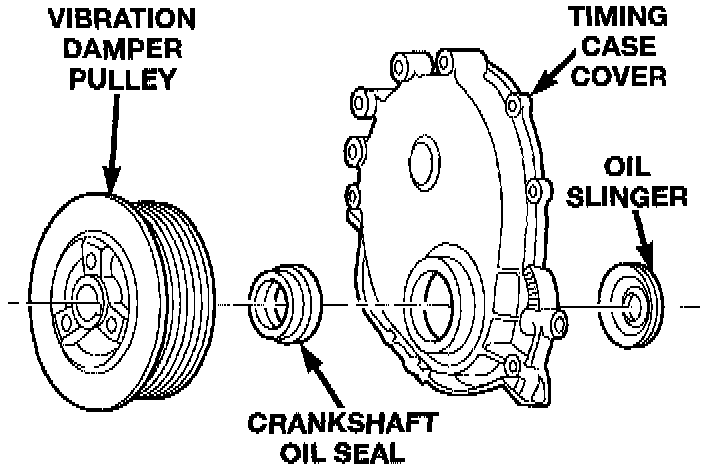
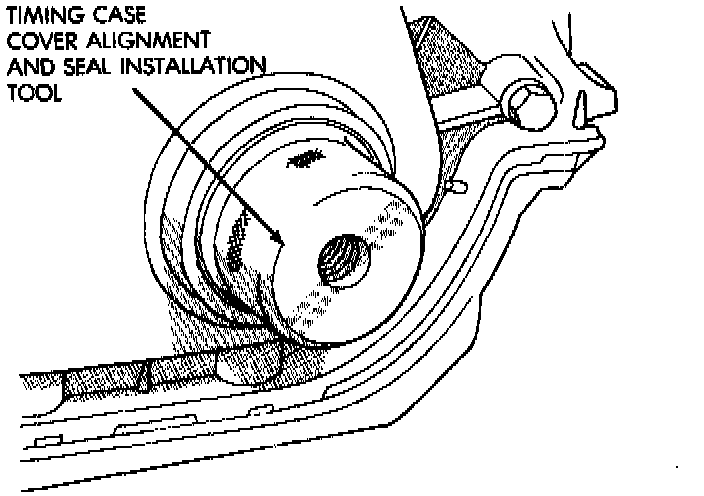

Timing Cover: Service and Repair
REMOVAL1. Disconnect negative cable from battery.
2. Remove the vibration damper.
3. Remove the fan and hub assembly and remove the fan shroud.
4. Remove the accessory drive brackets that are attached to the timing case cover.
5. Remove the A/C compressor (if equipped) and generator bracket assembly from the engine cylinder head and move to one side.
6. Remove the oil pan-to-timing case cover bolts and timing case cover-to-cylinder block bolts.
7. Remove the timing case cover and gasket from the engine. Make sure the tension spring and thrust pin do not fall out of the preload bolt.

8. Pry the crankshaft oil seal from the front of the timing case cover.
INSTALLATION
Clean the timing case cover, oil pan and cylinder block gasket surfaces.
1. Install a new crankshaft oil seal in the timing case cover. The open end of the seal should be toward the inside of the cover. Support the cover at the seal area while installing the seal. Force it into position with Seal Installation Tool 6139.
2. Position the gasket on the cylinder block.
3. Position the timing case cover on the oil pan gasket and the cylinder block. Make sure the tension spring and thrust pin are in place in the camshaft preload bolt.

4. Insert Timing Case Cover Alignment and Seal Installation Tool 6139 in the crankshaft opening in the cover.
5. Install the timing case cover-to-cylinder block and the oil pan-to-timing case cover bolts.
6. Tighten the 1/4 inch cover-to-block bolts to 7 Nm (60 inch lbs.) torque. Tighten the 5/16 inch front cover-to-block bolts to 22 Nm (192 inch lbs.) torque. Tighten the oil pan-to-cover 1/4 inch bolts to 9.5 Nm (84 inch lbs.) torque.
7. Remove the cover alignment tool.
8. Apply a light film of engine oil on the vibration damper hub contact surface of the seal.
9. Apply Mopar Silicone Rubber Adhesive Sealant to the keyway in the crankshaft and insert the key. With the key inserted in the keyway in the crankshaft, install the vibration damper, washer and bolt. Lubricate and tighten the bolt to 108 Nm (80 ft. lbs.) torque.
10. Install the A/C compressor (if equipped) and generator bracket assembly.
11. Install the engine fan and hub assembly and shroud.
12. Install the serpentine drive belt and tighten to obtain the specified tension.
13. Connect negative cable to battery.